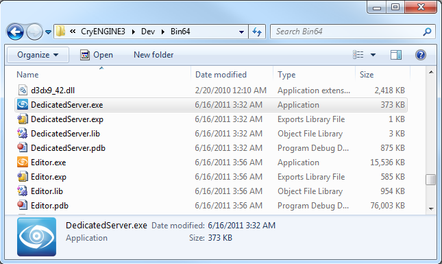
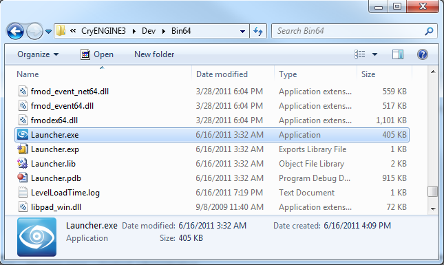

Overview
After Setting Up a Multiplayer Level and exporting the level to the game engine, you will be able to run a dedicated server and host your new level.
Due to security reasons, the Dedicated Server will, by default, not run if it is started with root privileges. If necessary, this behavior can be changed by toggling OPTION_ALLOW_RUNNING_SERVER_AS_ROOT in CMake, although it is preferable to change the user that runs the game server.
Preparing to Connect
Make sure the same SDK build is installed on all of the computers that you wish to play with.
Copy the multiplayer level folder to each SDK installation where you will play.
In the example of the Setting up a Multiplayer Level and in the standard SDK installation folder, copy the level to this folder: \<root>\Game\Levels
Hosting a Level on the Dedicated Server
The DedicatedServer.exe application is located in the \Bin64 directory.

The DedicatedServer application
Start the application on your host server. You will need to know the IP address for other players to join. Once the DedicatedServer program has loaded, enter the following commands:
- sv_gamerules "DeathMatch"
- map "YOURMAPNAME"
Where "DeathMatch" are the rules for multiplayer game.
Where "YOURMAPNAME" is the name of the multiplayer map.
Connecting to the Server
Run the Launcher.exe program on each of the computers that will take part in the DeathMatch multiplayer game.

The Launcher application
Access the console by pressing the tilde "~" key. Type the following and press enter:
connect xxx.xxx.xxx.xxxWhere xxx.xxx.xxx.xxx is the IP address of the host server.
Connecting to the host server will automatically launch the level and allow you to play a DeathMatch multiplayer game.
Server Command List
Server Settings:
Console Command | Description |
|---|---|
sv_bandwidth [50000] (Default: 50000) | Bit rate on server |
sv_bind [0.0.0.0] | Bind server to a specific address. |
sv_cheatprotection [3] (Default: 3) | Enables Crysis internal cheat protection. |
sv_DedicatedCPUPercent [0] (Default: 0) | Sets the target CPU usage when running as a dedicated server, or disable this feature if it's zero. Usage: sv_DedicatedCPUPercent [0..100] |
sv_DedicatedMaxRate [50] (Default: 50) | Sets the maximum update rate when running as a dedicated server. Usage: sv_DedicatedMaxRate [5..500] |
sv_gamerules [gamerules] | Singleplayer or DeathMatch |
sv_gs_report [1] (Default: 1) | Enables Gamespy server reporting. Necessary for NAT negotiation. |
sv_gs_trackstats [1] (Default: 1) | Enables Gamespy stats tracking. |
sv_lanonly 0 (Default: 0) | Set 1 for a LAN server. |
sv_map [mapname] | The map the server should load. |
sv_maxplayers [maxplayers] (Default: 32) | Number of max players on the server |
sv_maxspectators [maxspec] (Default: 32) | Number of max spectators on a server |
sv_packetrate [30] (Default: 30) | Packet rate on server. |
sv_password [password] | Server password. |
sv_port [64087] (Default: 64087) | Bind server to a specific port. |
sv_ranked [0] (Default: 0) | Enables statistic report, for TSP servers only. |
sv_say [... Your Message...] | Broadcasts a message to all clients. |
sv_servername [name] | Name for the server that is used ingame. If no name is set machine name will be used instead. |
sv_timeofdayenable [0] (Default: 0) | Enables time of day. |
sv_timeofdaylength [1] (Default: 1) | Sets time of day changing speed. |
sv_timeofdaystart [12] (Default: 12) | Sets time of day start time. |
sv_voting_cooldown [180] (Default: 180) | Sets voting cool down time. |
sv_voting_ratio [0.51] (Default: 0.51) | X% of player votes needed for successful vote. |
sv_voting_team_ratio [0.61] (Default: 0.61) | X% of team member votes needed for successful vote. |
sv_voting_timeout [60] (Default: 60) | Voting timeout in seconds. |
Gameplay Settings:
Console Command | Description |
|---|---|
g_fraglead [1] (Default: 1) | Number of frags a player has to be ahead of other players once g_fraglimit is reached. |
g_fraglimit [0] (Default: 0 = infinite) | Number of required frags before a round ends. |
g_minplayerlimit [0] (Default: 0) | Minimum number of players before game starts. |
g_nextlevel | Switches to next level of the map list. |
g_DeathCam [1] (Default: 1) | Shows the killer's location. |
g_revivetime [20] (Default: 20) | Revive time. |
g_spectate_TeamOnly [0] (Default: 0) | If set to 1 (true) it allows to spectate your team mates only. |
g_teamlock [2] (Default: 2) | Does not allow joining a team that has 2 more players than the other. |
g_tk_punish [1] (Default: 1) | Allows team kill punishment. |
g_tk_punish_limit [10] (Default: 10) | Number of team kills a user will be banned for. |
g_teamlock [2] (Default: 2) | Number of players one team needs to have over the other to not allow joining this team anymore. |
g_minteamlimit (1) (Default:1) | Minimum number of players in each team to start a match. For Power Struggle only. |
g_friendlyfireratio [1] (Default: 1) | Sets friendly damage ratio. [0] will disable friendly fire. |
Common Commands:
Console Command | Description |
|---|---|
Ban [playername] | Bans player for [ban_timeout] minutes from server. |
ban_remove [playername] | Removes player from ban list. |
ban_status | Shows currently banned players. |
ban_timeout | Ban timeout in minutes. |
Net_next_map | Notifies clients on server about the next map. |
Kick [playername] | Kicks player from the server. |
Kickid [playerid] | Kicks player via ID from the server. |
Status | Shows current status of server. |